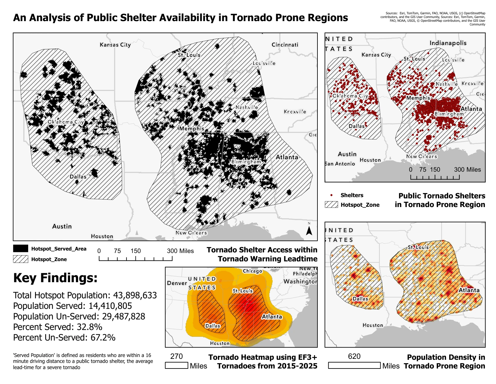

GIS / HAZARD ACCESSIBILITY
Public tornado shelter access.
A spatial analysis of historical tornado hotspots, public shelter locations, modeled driving times, and population patterns.
THE QUESTION
What I explored.
Where do concentrations of historical significant tornadoes overlap populations outside modeled public-shelter service areas?
This project examines the relationship between tornado-prone areas and access to mapped public shelters. I combined historical NOAA tornado reports, a community-sourced shelter inventory, and Census population information to explore where public-shelter coverage appeared limited within the selected study area.
The final map.
1 map layoutOpen the original PDF for full-resolution labels, legends, and source credits.

Historical coursework analysis, not a current shelter directory. The 16-minute threshold is an analytical choice, not a guaranteed warning lead time.
WORKFLOW
From data
to interpretation.
- Define a study area. Create an EF-weighted kernel-density raster from historical tornado reports, reclassify the higher-density area, and convert the selected zone to polygons.
- Model shelter access. Use Network Analyst service areas to model 16-minute driving access. Process more than 2,000 shelter locations in three batches, then merge and dissolve the results.
- Connect population data. Join 2022 Census population tables to block-group boundaries. Select block groups by their centers to identify populations inside the hotspot and outside modeled service areas.
- Communicate the results. Combine the access analysis, shelter locations, population patterns, and tornado-density map in a single cartographic layout.
PROJECT FINDINGS
What the work
shows.
Within the project’s classification, 29,487,828 of 43,898,633 residents were counted outside the modeled public-shelter service areas (67.2%). The remaining 14,410,805 were classified as served. These are study-specific estimates based on the chosen inputs and methods.
CONTEXT & LIMITATIONS
Reading the
results carefully.
- The shelter inventory is community-sourced; missing or inaccurate locations can change estimated coverage.
- The project measures mapped public-shelter access. Private shelter options and other protective structures are not represented by that inventory.
- Centroid-based block-group selection and the chosen hotspot threshold affect the population estimate. Modeled driving time does not establish storm-time travel conditions, shelter capacity, or guaranteed access.
LET’S TALK ABOUT THE WORK